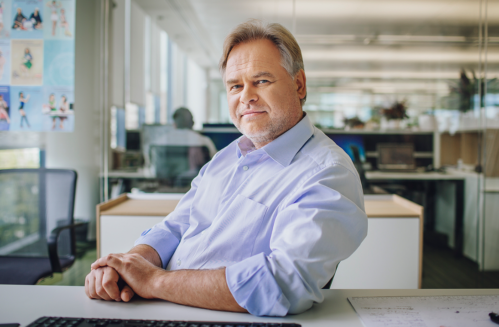

Введение

Что-то великое может начаться случайно, так произошло и с Евгением Касперским. В 1989 году он обнаружил на своём компьютере вирус Cascade. После получения специализированного образования в области криптографии, он смог понять, как устроен этот вирус и даже обезвредить его. С тех пор, Евгений продолжает заниматься кибербезопасностью и является генеральным директором частной компании, которую создал со своими коллегами.
Евгений Касперский широко известен не только как успешный предприниматель, но и как ученый: его заслуги в сфере технологий отмечены множеством престижных международных премий, а также почетной докторской степенью Плимутского университета. Свободное время он посвящает активному туризму и изучению дикой природы. Касперский активно ведет личный блог, где делится впечатлениями от своих экспедиций — от Арктики до тропических джунглей — и публикует авторские фотографии.
"Защита от киберугроз – это как шахматы. Вы должны всегда быть на шаг впереди соперника, предугадывая его действия". Евгений Касперский.